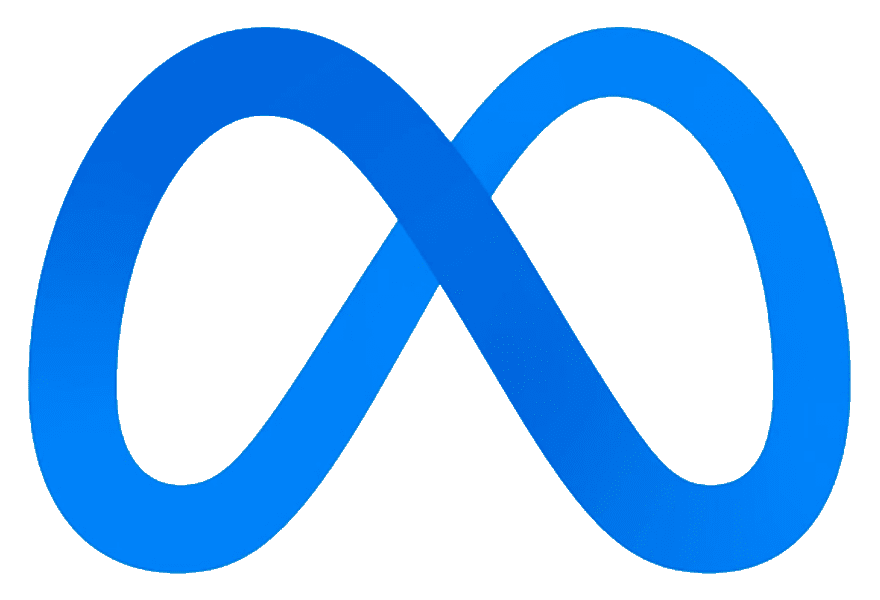

Bio
I am a mathematician currently pursuing my Ph.D. from Stanford. I am mainly interested in the intersection of combinatorics/discrete mathematics and theoretical computer science, and enjoy thinking about randomized algorithms, optimization problems, approximate counting schemes, and probability theory. I am fortunate to be advised by Jan Vondrák.
Education
Ph.D. in Mathematics, Stanford University, 2024 (expected) 
B.S. in Mathematics, Massachusetts Institute of Technology, 2015-2019 
Work Experience
Software Engineer and Machine Learning Intern, Meta, Summer 2022 
Quantitative Trading Intern, Jane Street, Summer 2021